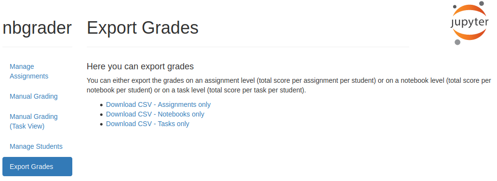

Grade export¶
Grades can be exported via the export grades option. Here you can choose between exporting grades for:
All assignments
All notebooks
All cells
Grades will be downloaded as a csv file.
Currently the grades for all students and assignments will be contained in the csv file.
In the future there will be an option to select only specific assignments / notebooks / cells.